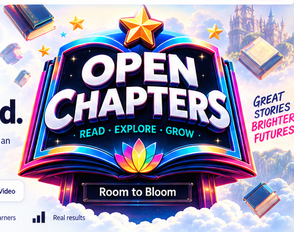
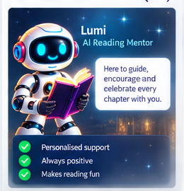
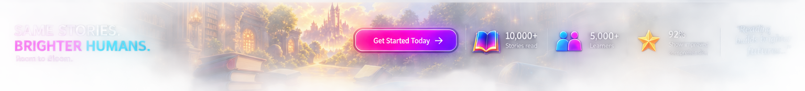

Engaging
stories
ROOM TO BLOOM
A bigger
brighter,
way to read
Open Chapter turns reading into an adventure, with engaging stories, expert support and real progress.
✦ Built by educators♥ Loved by learners▥ Real results

★★★Supportive
mentors
Measurable
progress
A calmer, more
confident learner
THIS IS OPEN CHAPTER
Don’t just hear about it. Step into a lesson.
The story stays at the centre while the cabinet makes reading feel active. Try the controls below — this is the product, not a screenshot.
Experience the full lesson →MISSION 3The Lost Library
STORY PROGRESS
★
SCORE2,450
ALEXLevel 4
MYSTERY · LEVEL 4
The Hidden Door
Maya pushed open the old library door. A warm light spilled out, and dust danced in the air like tiny stars.
Rows of books stretched higher than she could see. Each spine seemed to glow with a secret.
Somewhere in this library, a story was waiting — a story that might change everything.

Page 3 of 8
Want the room to yourself?Experience the full lesson →
STEP 1 A skills assessment
Benchmarked against K–12 ELA competencies, it shows where your child already shines across all five skills.
LIVE 1-ON-1 45 minutes with a real ELA tutor
A qualified, well-vetted tutor and your child, just the two of them, every lesson.
EVERY LESSON It has it all
Reading, vocabulary, grammar, writing and games made for their age, with every story played as a mission.
ALIGNED Tailored to their growth
Each lesson picks up exactly where the last one lit up, in step with US state standards and with school.
03
From the excitement of the lesson to progress you can actually see.
FOR PARENTS
Real progress.
A brighter you.
Detailed progress reports, reading insights and a supportive community make the learning underneath the fun visible.
See progress →
MEET THE MENTORS
A guide beside the learner, not above them.
Encouragement, questions and feedback arrive in the lesson without crowding out the story.
- Personalised support
- Always positive
- Learning remains visible

OPEN CHAPTER
ROOM TO BLOOM.
Focused reading. Real support. Visible progress.READ Stories stay centralTHINK Meaning becomes activeGROW Progress stays visible